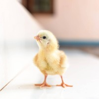

El pollito es la cría de la gallina. Nace tras un periodo de incubación de veintiún días y en la granja se alimenta principalmente de granos molidos y semillas durante sus primeras semanas de vida.
Volver a la página principal